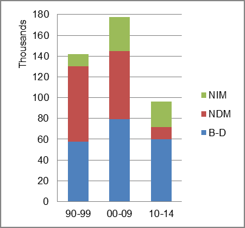
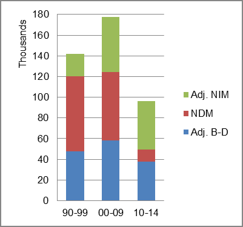

The foreign-born (FB) population increased from 25,300 in 1960 to 942,959 in 2010. That was an increase of 3627.1 percent. The foreign-born share changed from 0.6 percent to 9.7 percent.
The share of the overall population that was native-born (NB) increased by 123.2 percent.
Georgia: Population 1960-2010
The first chart below shows NDM as the largest factor in population change in the first period, replaced by B-D in the two most recent periods.
The second chart shows the same data but with an adjustment to reflect births to immigrants shifted to NIM. In it, NDM became the main factor adding population in the second period and NIM became the primary factor in the most recent period.
Georgia: Sources of Population Change 1990-2014 Georgia: Sources of Population Change (Adjusted) 1990-2014  
B-D NDM NIM B-D NDM NIM 90-'99 40.6% 51.2% 8.1% 90-'99 33.8% 51.2% 15.0% 00-'09 44.6% 37.0% 18.4% 00-'09 32.9% 37.0% 30.1% 10-'14 62.1% 12.2% 25.7% 10-'14 39.3% 12.2% 48.5%